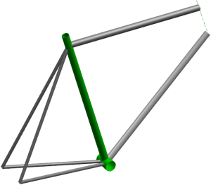
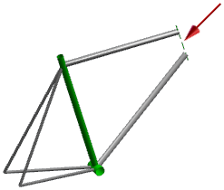
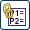
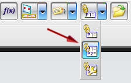

Open asm2_85_expression_bike_assm.

Ensure that the reference set of the head tube component is Entire Part.
Make asm2_85_expression_head_tube the Work Part.

Choose Tools→Expression.
Click Create Multiple Interpart Expressions .

In the Create Multiple Interpart Expressions dialog box, in the Source Part group, select asm2_85_expression_seat_tube.prt.
In the Naming Rule group, set:
Naming Rule = Add Prefix
Prefix String = IPE_
In the Expressions group, from the Source Expressions list, select tube_id and tube_od.
Click Add to Destination .
Click OK.
The interpart expressions are created.
In the Expressions dialog box, click OK.